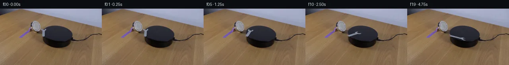

![首帧]()

Round 00
2026-11-05T10:56:32.090487+00:00像素候选变化代码 +211/−0inspection 更新
pixels 326a3f798a9e9ecb · code ed788d6fe646c043
查看本轮 generate.py 真实 diff
--- previous/generate.py
+++ current/generate.py
@@ -0,0 +1,211 @@
+"""Photographic pixel continuation using local NumPy/OpenCV operations only."""
+from pathlib import Path
+import hashlib
+import json
+import cv2
+import numpy as np
+from PIL import Image, ImageDraw
+from scipy.ndimage import gaussian_filter
+from artifact_io import save
+
+ROOT = Path(__file__).resolve().parent
+H, W = 144, 256
+SOURCE = np.array(Image.open(ROOT / 'first_frame.png').convert('RGB'), dtype=np.uint8)
+assert SOURCE.shape == (H, W, 3)
+F = SOURCE.astype(np.float32)
+Y, X = np.mgrid[:H, :W].astype(np.float32)
+PIVOT = np.array([109.5, 69.3], np.float32)
+# This affine camera model shortens ground-plane distances along image y.
+PROJECTION = np.array([[1., .33], [0., .56]], np.float32)
+ANGLES = np.array([0, 1, 3, 6, 10, 15, 21, 27, 33, 39,
+ 45, 51, 57, 63, 69, 75, 81, 87, 93, 99], dtype=float)
+
+
+def background_and_object():
+ """Infer the few occluded pixels from adjacent photographed wood and disk.
+
+ The rest of the input remains bit-for-bit unchanged. The exposed disk edge
+ is modeled by a sheared ellipse. An RGB color-line matte separates the
+ cool silver from warm wood and the nearly black disk.
+ """
+ # Only the photographed wrench's tiny bounding box may be reconstructed.
+ roi = (X >= 103) & (X <= 116) & (Y >= 50) & (Y <= 71)
+ # Disk left edge, calibrated from the unobscured upper rim at y=48..52.
+ cy, cx, ry, rx, shear = 63.6, 145.0, 20.5, 38.0, .33
+ edge = cx + shear * (Y - cy) - rx * np.sqrt(
+ np.clip(1. - ((Y - cy) / ry) ** 2, 0., 1.))
+ disk_coverage = np.clip((X - edge) / .85 + .5, 0., 1.)
+ disk = F[:, 119:120].repeat(W, axis=1).copy()
+ # Neighboring wood follows the input's strong shadow gradient in y.
+ wood = np.zeros_like(F)
+ for y in range(H):
+ for x in range(103, 117):
+ wood[y, x] = F[y, 101 + ((x - 103) % 3)]
+ candidate = wood * (1. - disk_coverage[..., None]) + disk * disk_coverage[..., None]
+
+ # A local silver reference follows the measured original handle shading.
+ silver = np.zeros_like(F)
+ for y in range(50, 72):
+ yy = min(max(y, 55), 69)
+ ref = np.median(F[yy, 107:112], axis=0)
+ silver[y] = ref
+ silver[50:55] = np.array([132., 142., 159.])
+ delta = silver - candidate
+ alpha = np.sum((F - candidate) * delta, axis=2) / np.maximum(
+ np.sum(delta * delta, axis=2), 1.)
+ alpha = np.clip(alpha, 0., 1.)
+ # Exclude the open jaw's actual background and neighboring tabletop.
+ # Shaft and fork coordinates are measured directly from the first frame.
+ allowed = np.zeros((H, W), bool)
+ row_bounds = {
+ 50: (104, 106), 51: (103, 115), 52: (103, 116),
+ 53: (103, 116), 54: (103, 116), 55: (104, 115),
+ 56: (105, 113), 57: (105, 113), 58: (105, 113),
+ 59: (105, 113), 60: (105, 113), 61: (105, 113),
+ 62: (105, 113), 63: (105, 113), 64: (105, 113),
+ 65: (105, 113), 66: (105, 113), 67: (105, 113),
+ 68: (105, 113), 69: (105, 113), 70: (105, 113),
+ 71: (106, 112),
+ }
+ for y, (a, b) in row_bounds.items():
+ allowed[y, a:b+1] = True
+ allowed[50:53, 107:113] = False
+ allowed[53, 107:110] = False
+ # The fork's right tip begins at row 51.
+ alpha *= roi & allowed
+ # Pixels consistent with wood have no object coverage.
+ alpha[(F[..., 2] - F[..., 0] < -27) & (X < 108)] = 0
+ alpha[alpha < .035] = 0
+ # Keep original fully silver pixels opaque; avoid unmixing interior texture.
+ core = (F.mean(axis=2) > 122) & (F[..., 2] - F[..., 0] > 13) & allowed & roi
+ alpha[core] = 1.
+ # Color unmixing retains the original cool metal texture at edge pixels.
+ clean = F.copy()
+ active = alpha > 0
+ clean[active] = candidate[active]
+ premul = np.zeros_like(F)
+ premul[active] = F[active] - clean[active] * (1. - alpha[active, None])
… diff truncated; 124 more lines …